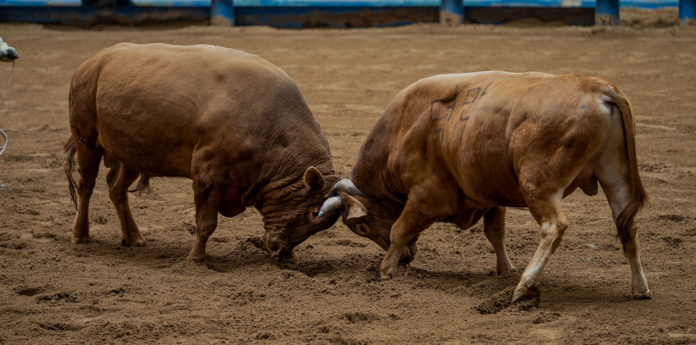
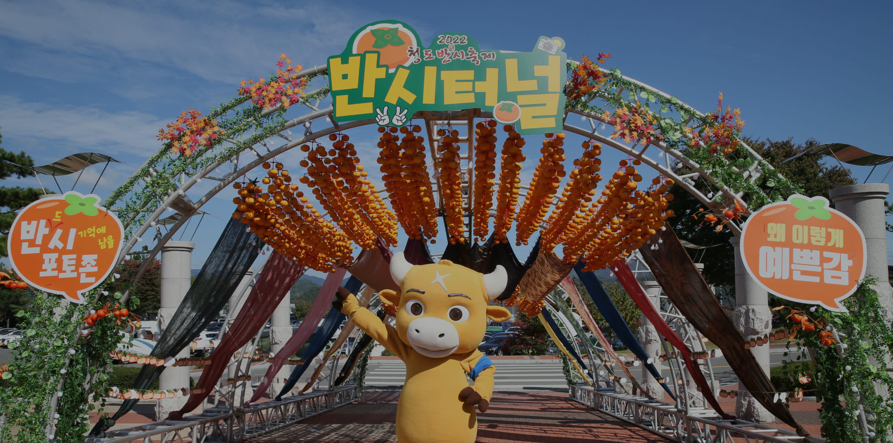
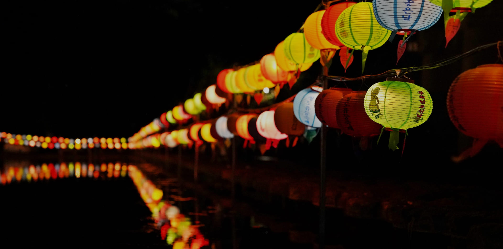

연간 정기 축제 일정

매년 2월 ~ 3월
청도 소싸움 축제
전통 소싸움을 현대 축제로 승화시킨 청도의 대표 봄 축제. 박진감 넘치는 소싸움 대회와 다양한 체험 프로그램 운영.
청도군 화양읍 청도로 219

매년 10월
청도 와인 축제
청도 반시 와인을 주제로 한 가을 대표 축제. 와인 시음, 포도밭 체험, 요리 경연대회 등 다양한 프로그램.
청도 와인터널 일원

매년 11월
청도 반시 감 축제
청도의 특산물 반시를 기념하는 가을 수확 축제. 감 따기 체험, 곶감 만들기, 지역 농산물 장터 운영.
청도군 일원

매년 5월 (부처님 오신 날)
운문사 연등 축제
천년 고찰 운문사에서 펼쳐지는 장엄한 연등 행사. 저녁 불빛 속 연등의 향연은 잊을 수 없는 경험.
운문면 신원리 운문사